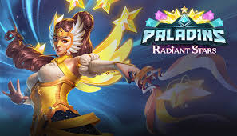
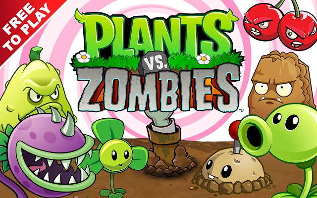

Profil
Might Be Eternal atau MBE adalah tim esport terbesar didunia dan akhirat karna sesekali menjuarai turnament bergengsi di dunia dan akhirat
Saat ini tim ini mempunyai berbagai divisi paling banyak diantara tim esport lain contohnya Divisi Dota2, CS-GO, Paladins, PUBG, PUBGM, Free Fire, Zuma, Feeding Freenzy, Plants vs Zombie, CS 1,6, Pointblank, Valorant, CODM, PES, FIFA, DBD, WORMS, LOL, dan masih banyak lagi.
Tim ini didirikan pada 13 Agustus 2024 dengan pendiri bernama Dwi Darmawan. Sang pendiri merupakan salah satu Top Global game dinosaurus yang hanya ada di browser bila internet no acces, setelah lama menggeluti bidang tersebut akhirnya ia berisiniatif membuat tim esport.
Prestasi
Prestasi yang dimenangkan tim ini terbilang sangat banyak diantaranya:
- TI -0 "Dota 2" 2008 Juara 2010 Juara Dengan Jumlah Fans Terbanyak
- PBNC 2012 "Pointblank" 2012 Juara DI Hati Para Penggemar
- FFIM Season 9 "Free Fire" 2016 Juara Tim Dengan Subscribe Terbanyak
- PUBG Nations Cup "PUBG" 2017 Juara Harapan
- Dreamback Valencia 2018 "Paladins" Juara Tim Paling Kompak
- PvZ Sea 2018 "Plants vs Zombies" Juara Tim Paling Tertib
- Zuma Nations 2019 "Zuma" Juara Tim Paling Mirip Kodok Zuma
Divisi Tim Esport
Ini lah divisi-divisi yang berada pada tim ini
Dota 2

Dota 2 adalah sebuah permainan Arena pertarungan daring multipemain, dan merupakan sekuel dari Defense of the Ancients mod pada Warcraft 3: Reign of Chaos dan Warcraft 3: The Frozen Throne
dan inilah nama-nama pemain terbaik kami :
- Dwi Darmawan a.k.a skyone (Leader)
- Aan Skroep a.k.a skytwo
- Agus Mundur a.k.a skythree
- Ahmad Riki a.k.a skyfour
- Gilang Baginda a.k.a skyfive
Paladins

Paladins adalah permainan tembak-menembak orang-pertama yang dikembangkan oleh Hi-Rez Studios. Paladins dibuat dengan tema fiksi ilmiah dan pengaturan fantasi Champions yang penuh warna.
Setiap Champions memiliki cara menembak yang unik dan sesuai kemampuan mereka sendiri dan ini lah nama-nama pemain terbaik kami :
- Dwi Darmawan a.k.a seaone (Leader)
- Jamal Skroep a.k.a seatwo
- Agus Maju a.k.a seathree
- Ahmad Riki a.k.a seafour
- Gilang Baginda a.k.a seafive
Plants vs Zombies

Plants vs. Zombies adalah permainan pertahanan menara yang dibuat dan diluncurkan oleh PopCap Games untuk Microsoft Windows dan Mac OS X serta oleh induk perusahaannya, Electronic Arts untuk Android.
dan ini lah nama-nama pemain terbaik kami :
- Dwi Darmawan a.k.a landone (Leader)
- Jamal Skroep a.k.a landtwo
- Agus Maju Mundur a.k.a landhree
- Ahmad Riki a.k.a landfour
- Gilang Baginda a.k.a landfive